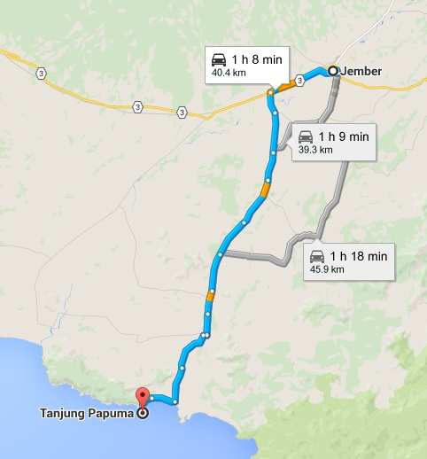

PANTAI PAPUMA
Pantai Papuma Jember merupakan salah satu wisata pantai yang dimiliki Jawa Timur. Nama Papuma sendiri sebenarnya adalah sebuah singkatan dari “Pasir Putih Malikan”. Dan singkatan tersebut lah yang hingga kini lebih familiar di telinga wisatawan. Sebagaimana yang kita tahu bahwa Indonesia merupakan satu satunya negara yang memiliki garis pantai terpanjang di dunia, sebuah anugerah yang cukup membanggakan. Kini, destinasi wisata pantai unggulan tidak hanya bisa di dapatkan di pulau dewata saja, melainkan hampir seluruh daerah di Indonesia memiliki pantai yang cantik dan layak untuk di kunjungi, salah satunya pantai Papuma yang terletak di Jawa Timur ini.
Untuk menuju pantai papuma dari Jember kota diperlukan waktu sekitar 45 menit-1 jam. berikut adalah tarif untuk menuju pantai papuma :
Biaya / Tarif / Harga di Tanjung Papuma:
- Harga tiket masuk mobil: Rp 5.000
- Harga karcis parkir mobil: Rp. 5.000
- Harga tiket masuk per orang: Rp. 17.500
- Tarif naik perahu Rp. 20.000-25.000 / per orang / 1x putaran
- Tarif toilet: Rp. 3.000
- Tarif mandi: Rp. 5.000
RUTE MENUJU PAPUMA

KEINDAHAN DI PANTAI PAPUMA
@ DESTINASI JEMBER SITE BY DESTINASI JEMBER